T4T LAB 2019 Texas A&M University. Invited Professor: Joris Putteneers.
Course director: Gabriel Esquivel
Team:
Anna Cook,
Courtney Ward,
Francisco Anaya,
Benjamin Hergert and
Luis Rubio
This new ontology of cyber crimes is resolved through the progression within the prison from admittance to reintegration to society. This process is expedited where information gained through big data is synthesized into virtual reality in a post-human level of efficiency. A prisoner must pass through a series of chambers and experience parts of the simulations taking place in them before arriving at their own customized VR simulation. Because of the nature of VR, the prisoner would feel as though they have been incarcerated for a long period of time, when in reality, only a few hours have passed. This is further discussed by Foucault’s analysis that the current prison system has begun to transfer from the punishment of the body into one that is centered on the punishment of the mind and the intent to commit crime. In each simulation, the prisoner is unaware that their environment is not real. The simulation corresponds to the crime committed, as a way for the convict to realize the severity of their actions. The punishment acts as rehabilitation in a new application of neuroplasticity in which the minds of both humans and AI are rewired to break the connections of criminal behavior and instead reinforce “proper” avenues of thought. This is completed through the VR simulation where PTSD is prevented by forcing the prisoners to confront these traumas.
This project speculates on a prison in the post-singularity era. The prison is occupied by both humans and AI who have committed cyber crimes, and is governed by a council from both species. As a prisoner is admitted to this center, they are interviewed and assessed based on the severity of their crimes and their initial degree of contrition. Once this information has been obtained, they are sent to a specific chamber of the prison and exposed to a customized VR simulation. This reflects Foucault’s assertion within Discipline and Punish, in which the prison begins to operate in the same typology of the factory or school where one is subjected to the normalizing gaze.In creating this new prison typology, we are reinterpreting Foucault’s anthropocentric basis to fit the conditions of a post-singularity and post-anthropocentric society where the effects reach both human and AI.
This model is based in cities and can be implemented in multiple locations throughout the world as needed. Each model will be tethered to the city but floating above it, and thus acts as both a panopticon and a reflection of crime rates within the city. The wires that tether the object act as data collection structures and can grow and stretch as needed to better absorb information from points throughout the city. The physicality of these tethers is based on the psychological phenomenon known as the Hawthorne effect in which individuals modify an aspect of their behavior in response to their awareness of being observed. The algorithm acts not only as habitable space to define each chamber, but also as a signal jammer to block unauthorized communications from entering or leaving the center. Because of the algorithm’s computational nature, its form fluctuates based on the density of prisoners within.
The aesthetic agency is realized through an interpretation of ornament through VR generation. This is articulated through the appearance of sculpted surfaces organized into a hierarchy of elements read as a continuous whole. This ornamental evolution follows a grotesque interpretation in which fear and awe are intertwined through the asymmetrical expression of over-exaggerated repetitive elements. In this manner, the influx of crime data gathered from the city generates further ornamentation. This ornamentation shifts past notions of baroque and rococo and begins to define its own style, moving forward operating in the post-anthropocene. These concepts are represented through the form of a narrative collage in which the progression through the experience of the prison is displayed in a digital reinterpretation of the collage. The collaged images become something else—a new form that is neither representative of nor derivative of the original architecture that seeks to further dilute reality.
The process of designing the prison is critical to the understanding of its operation as we move past the epistemological and move into the ontological. We have moved past the idea of “becoming digital” with design operations being performed in the real world using analog methods, concepts, and tools such as the mouse. Now we function completely digitally in the VR simulation where we are pulling from digital information and generating form through a post-process method of sculpting that operates outside of the bounds of physical and human limitations. In this way, the prison is created and exists within a new reality that doesn’t acknowledge its own existence as being digital. This demonstrates the effectiveness of VR as a new methodology for the generation of both form and concept, existing simultaneously.
This produces a program that blurs the lines between reality and simulation through strategies of manipulation of time and space in an effort to change societal perceptions of the purpose of prisons. This progresses past Foucault’s analysis of the treatment of prisoners and the effects of their separation from society by providing a solution in the form of a post-heterotopic existence: an in-between space that acts as a way to not to only alter an individual criminal, but as a way to repurpose the influence of the prison on society.
 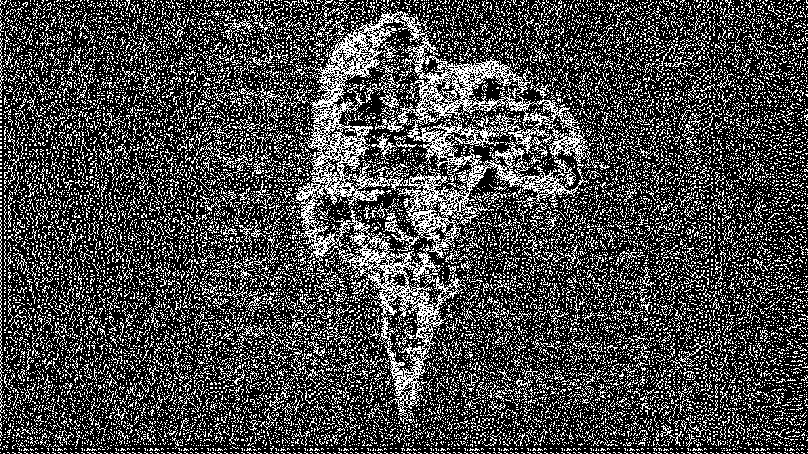
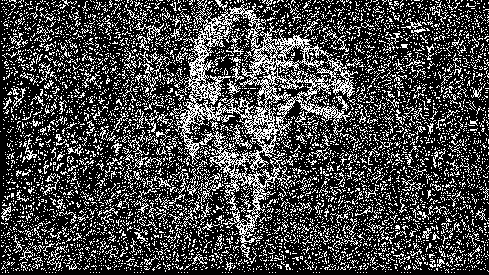
 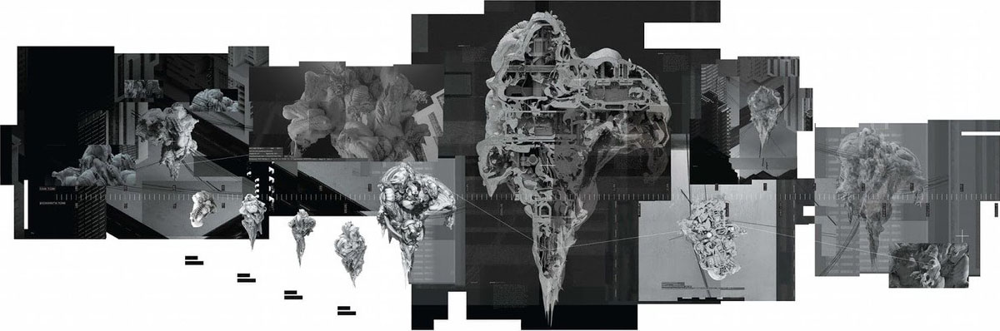
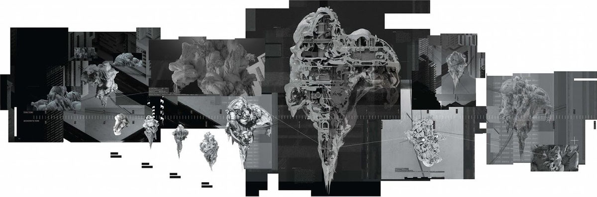

 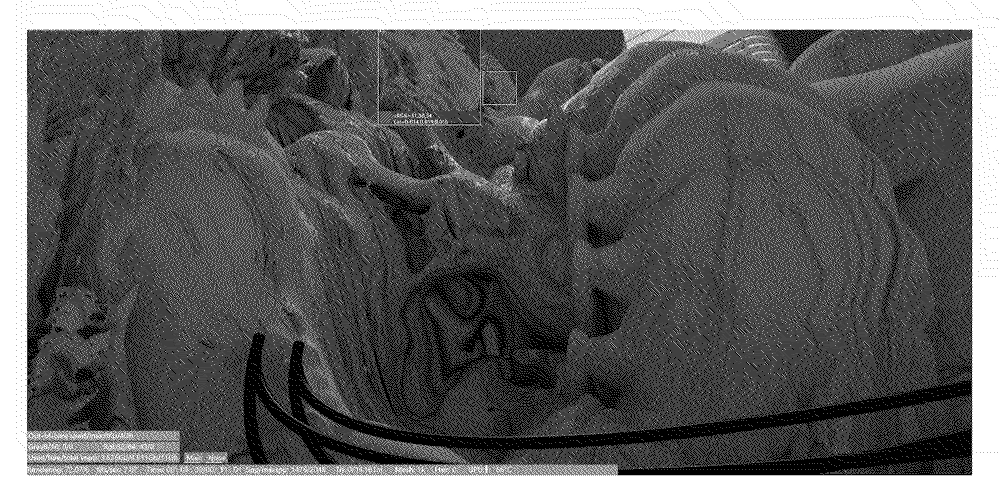
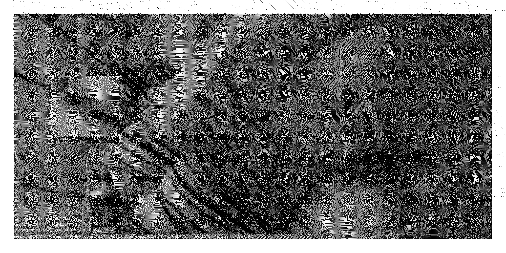
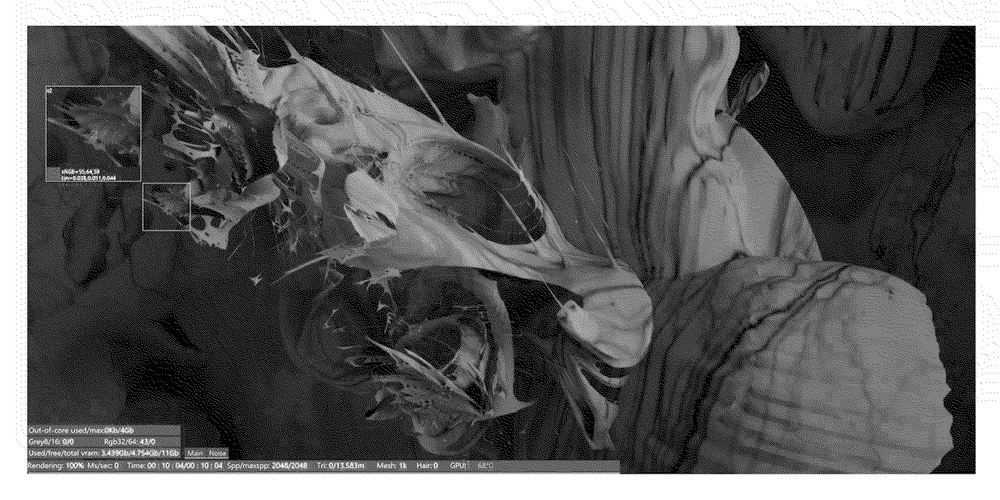
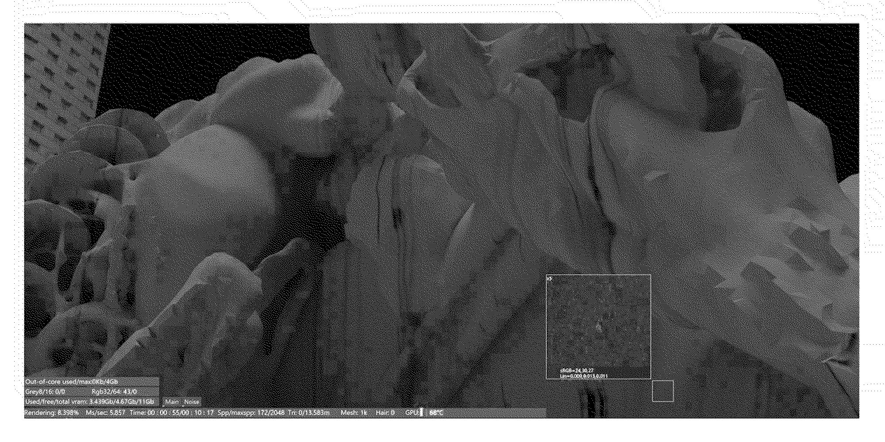
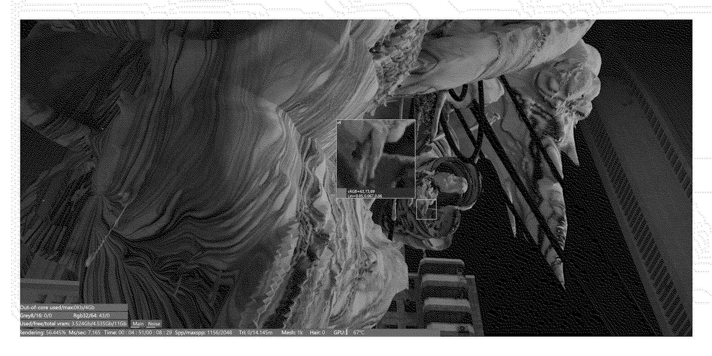
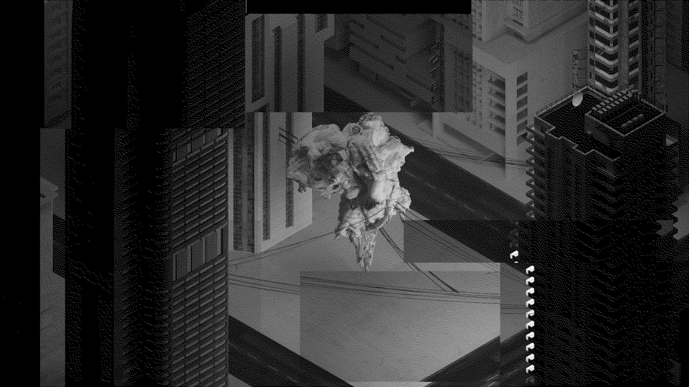
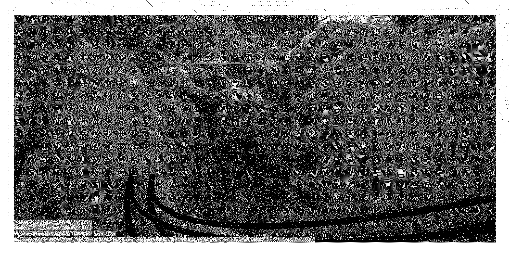
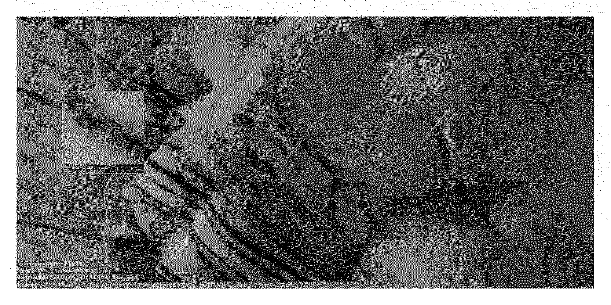
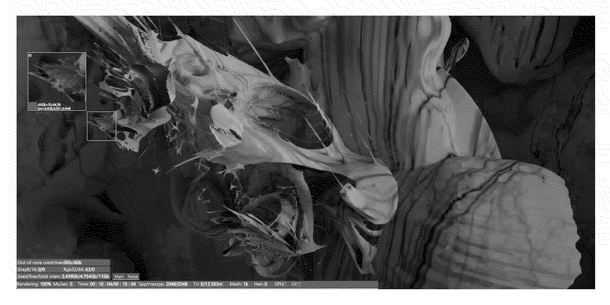
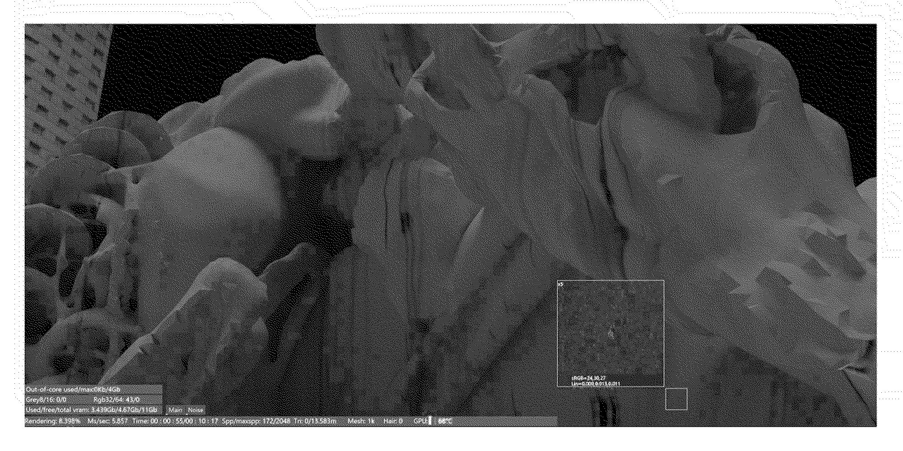
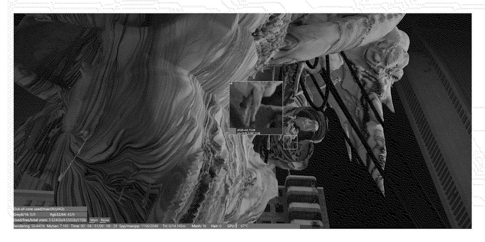
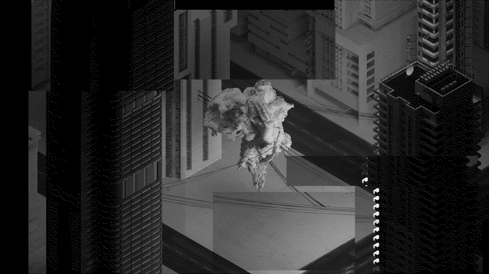
 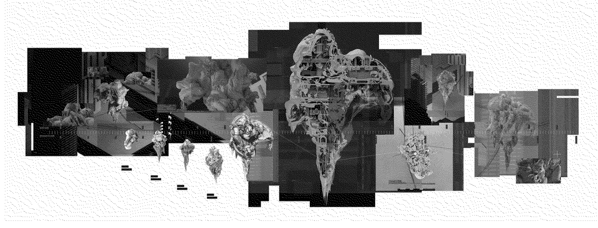
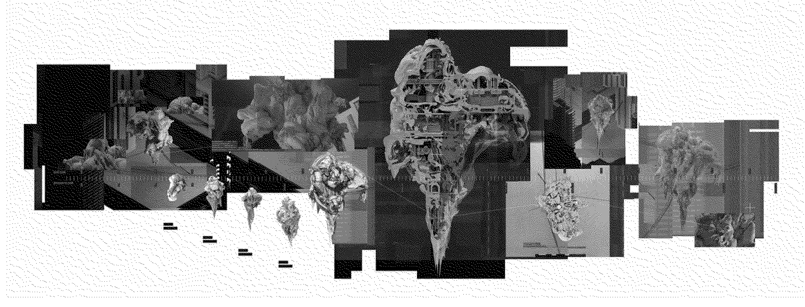